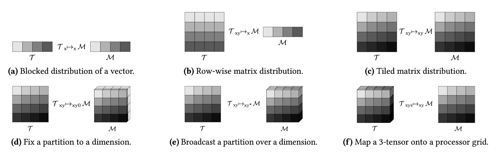
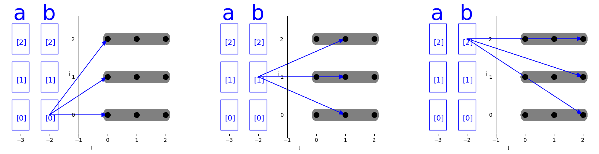
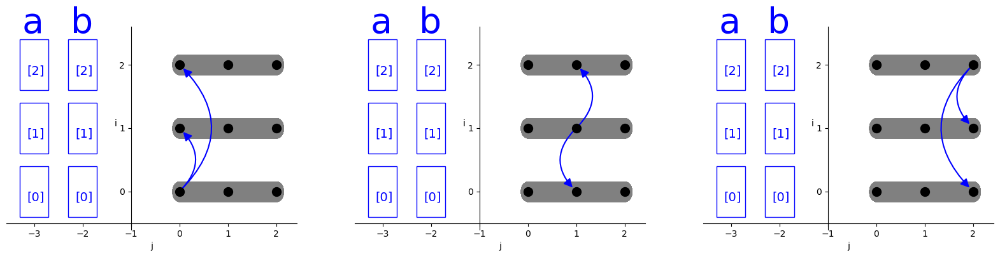

DISTAL: The Distributed Tensor Algebra Compiler
这篇论文主要是介绍了一个分布式张量代数编译器， 它通过自定义的DSL可以帮助我们快速生成分布式计算代码。
Index Notation
首先这篇论文是在taco之上实现的，计算的描述依旧是index notation, 例如： \[ A(i, j) = B(i, k) * C(k, j) \]
和其他的tensor expression dsl类似, 也同样是用相对简单的代码构建出对应的循环/计算的ir。对于这个例子，它的ir是：
forall(i, forall(j, forall(k, A(i,j) += B(i,k) * C(k,j))))Tensor Distribution Notation
distal很好的发扬了多面体模型的思想，数据分布到不同的机器上的本质就是数据点的集合被放置到了不同的机器上，因此他采用了多面体中映射的概念，通过tensor distribution notation来描述数据点集合和设备的映射关系来表达数据分布： \[ \begin{aligned} &\text{Machine}: \mathcal{M}\ \ \ \text{Tensors}: \mathcal{T} \\ &\text{Dimension Variables}: d \\ &\text{Dimension Name}\ \ n ::= d | \mathbin{N} | * \\ &\text{Tensor Distribution}\ \ \mathcal{D} ::= \mathcal{T}_{d^+}\mapsto_{n^+} \mathcal{M} \end{aligned} \]
其中\(\mathcal{T}_{d^+}\)描述的tensor本身，由于tensor的维度个数可能是动态的，因此用多个维度变量\(d^+\)来表示， 维度变量的个数等于tensor的维度。而机器\(\mathcal{M}\)的描述则是多个维度名\(n^+\)，维度名的个数等于拓扑的维度，注意维度名可以由维度变量/正整数/通配符*表示，这为描述数据分布提供了较大的灵活性。 同时这里隐含了一个约束就是
下面来看几个具体的例子， 首先假设\(\mathcal{T}\)的shape为[100], \(\mathcal{D}\)的个数是[10]
| 预设 | 描述 | 解释 |
|---|---|---|
\(\mathcal{T}\):[100], \(\mathcal{M}\): [10] |
\(\mathcal{T} _{x} \mapsto_{x} \mathcal{M}\) | 每个设备拥有[10]的数据 |
\(\mathcal{T}\):[100,100], \(\mathcal{M}\): [10] |
\(\mathcal{T} _{xy} \mapsto_{x} \mathcal{M}\) | 每个设备拥有[10,y]的数据 |
\(\mathcal{T}\):[100,100], \(\mathcal{M}\): [10,10] |
\(\mathcal{T} _{xy} \mapsto_{xy} \mathcal{M}\) | 每个设备拥有[10,10]的数据 |
\(\mathcal{T}\):[100,100], \(\mathcal{M}\): [10,10,10] |
\(\mathcal{T} _{xy} \mapsto_{xy0} \mathcal{M}\) | 某一个平面的每个设备拥有[10,10]的数据 |
\(\mathcal{T}\):[100,100], \(\mathcal{M}\): [10,10,10] |
\(\mathcal{T} _{xy} \mapsto_{xy*} \mathcal{M}\) | 每个平面的每个设备拥有[10,10]的数据 |
\(\mathcal{T}\):[100,100,100], \(\mathcal{M}\): [10,10] |
\(\mathcal{T} _{xyz} \mapsto_{xy} \mathcal{M}\) | 每个设备拥有[10,10,100]的数据 |
对应上述表格中每一个例子的具体示意图如下： 
可以把tensor看作为一系列坐标-值的集合，machine可以看作是坐标的集合，而tensor distribution notation \(\mathcal{T}_{X}\mapsto_{Y}\mathcal{M}\) 就是一个映射函数，将tensor的坐标映射到machine的坐标。由于映射的时候存在broadcast或单独指定的情况，因此这种映射并不一定是一对多或多对一映射，为了实现复杂的映射，实际上映射函数由两部分组合而成，第一部分是\(\mathcal{P}: \mathcal{T} \mapsto \text{color}\)，第二部分\(\mathcal{F}: \text{color} \mapsto \mathcal{M}\), 相当于先进行多对一映射再进行一对多映射，其中\(\text{color}\)作为独一无二的标记存在，并且\(\text{color}\)由\(Y\)中有效的维度变量组合而成：\((X \bigcap Y) \subseteq Y\)。 举个例子，假设\(\mathcal{T}: [4,4]\),\(\mathcal{M}: [2,2,2]\), distribution notation为\(\mathcal{T}_{xy} \mapsto_{xy*} \mathcal{M}\), 那么映射\(\mathcal{P}\)如下： \[ \begin{aligned} \mathcal{P} = \{ &\{ (0,0),(1,0),(0,1),(1,1) \} \mapsto (0,0), \{ (2,0),(3,0),(2,1),(3,1) \} \mapsto (0,1), \\ &\{ (0,2),(1,2),(0,3),(1,3) \} \mapsto (1,0), \{ (2,2),(3,2),(2,3),(3,3) \} \mapsto (0,0) \} \end{aligned} \]
而映射\(\mathcal{F}\)如下： \[ \begin{aligned} \mathcal{F} =\{ &(0,0) \mapsto \{(0,0,0),(0,0,1)\}, (0,1) \mapsto \{(0,1,0),(0,1,1)\},\\ &(1,0) \mapsto \{(1,0,0),(1,0,1)\}, (0,0) \mapsto \{(0,0,0),(0,0,1)\} \} \end{aligned} \]
通过上述这种分阶段的简单映射从而实现了复杂的映射。
Computation Schedule
考虑这样一段计算：
for i in range(3):
for j in range(3):
A[i] += B[j]使用多面体模型表示他所对应的迭代域为：
domain = isl.set("{ S[i, j] : 0 <= i < 3 and 0 <= j < 3}")如图所示：

Distribute
distal在taco的基础上使用distribute的调度来修改迭代域，从而表示分布式计算。内部的实现如下：
distribute(vector<IndexVar> targets, vector<IndexVar> dist, vector<IndexVar> local, Machine m):
// Divide each dimension by the corresponding machine dimension.
for i in range(0, m.dim):
// Reorder loops so each outer divided variable is on the outside.
divide(targets[i], dist[i], local[i], m.dims[i])
// Distribute all of the outer divided variables.
reorder(dist + local)
distribute(dist)实际上就是将循环进行split后再进行reorder，再标记外层循环与machine进行对应。
当distribution notation为\(\mathcal{a}_{x} \mapsto_{x} \mathcal{M}\),\(\mathcal{b}_{x} \mapsto_{x} \mathcal{M}\), 那么对应的分布式调度为distribute(i,io,ii,M), 经过调度后的迭代域如下：

灰色区域所表示的是单独的分布式节点，在循环i上进行分布式后，所有的循环j都被划分到了不同的处理器节点上。
Communicate
当数据分布在不同的处理器上时，在发生计算时就需要将所依赖的数据从别的处理器节点上获取，因此需要进行数据的通信。基于distribution notation以及多面体分析，我们可以计算得到每一次迭代所需要传输的数据。将这种数据依赖以及循环j的前三次迭代绘制出来，如下所示：

可以看到，a,b在循环i上进行分布，那么每个i的迭代对应他们的一部分数据区域，在每次j的迭代中，每个节点会需要从其他节点获取到b的部分数据。当然这是基于数据的分布式情况以及依赖分析所得到的naive 通信方式。
在上面这种情况下，如果采用一个更大块的通信操作，直接从节点获取多次计算所需要的数据，而不是每次迭代都获取数据，那么性能可能会更好，这就引出了通信频率和内存使用的trade-off。为了在这种trade-off的场景下可以进行调节，distal提供了\(\text{communicate}(\mathcal{T}, i)\)的调度。他通过指定迭代循环的方式，配合数据分布以及数据依赖分析，把迭代循环内部所有嵌套循环所依赖的数据放到所指定循环的开始来获取。比如执行distribute(b,i)后，计算如图所示：

distal的communicate调度是进行了简化设计，因为如果要指定send/receive或者设备编号等，整个事情就会变的非常复杂。
Rotate
许多分布式算法采用脉动的方式实现，处理器反复将数据shift到相邻节点。脉动算法可以有效利用互连的机器架构，并通过避免对相同数据的竞争来提高性能。
首先继续从distribute(i)的调度开始，默认可以认为他执行的是broadcast的通信操作，在每个时间片上，都会向所有处理器发送对相同数据的通信请求，如下图所示： 
为了表达脉动计算，distal引入rotate调度, 他是通过引入时间维度的映射，让j的迭代空间在时间上旋转，从而实现脉动式通信模式。如下图所示，实际上现在的横轴已经不是j的迭代空间了，而是时间维度，真正的j的迭代空间在每个时间片上发生了旋转。 如果对于每个i的迭代，j的迭代空间被旋转且j的第i次迭代先发生，那么称整个execution space具备脉动模式： 
给定一组索引变量\(I\)，目标索引变量\(t\), 以及结果索引变量\(r\), rotate(t,I,r)的调度会另迭代空间\(t\)根据\(\sum_{i\in I} i \mod \text{extent(t)}\)发生旋转。 旋转后，对于所有的\(i\in I\)，给定其一个固定的剩余迭代\(i'\in (I-i)\), \(r\)的相同迭代会在\(i\)的不同迭代上发生。假设\(t\)在\(i,j\)两个维度上进行了rotate, 那么每次\(i\)或\(j\)的迭代开始时,\(r\)的值都是不同的。
Case Studies
distal中采用Tensor Distribution Notation和Computation Schedule可以组合起来表达各种各样的分布式算法。当然大量分布式算法都集中在分布式矩阵乘法算法上。因此distal展示了实现各种分布式矩阵乘算法的例子：

Summa
首先定义各种分布式tensor以及循环域。
int dim = 1024;
// Place each tensor onto a processor grid.
auto gx = ir::Var::make("gridX", Int32, false, false, true);
auto gy = ir::Var::make("gridY", Int32, false, false, true);
auto grid = Grid(gx, gy);
auto dist = TensorDistribution(grid);
Tensor<double> a("a", {dim, dim}, Format{Dense, Dense}, dist);
Tensor<double> b("b", {dim, dim}, Format{Dense, Dense}, dist);
Tensor<double> c("c", {dim, dim}, Format{Dense, Dense}, dist);
IndexVar i("i"), j("j"), io("in"), jo("jn"), ii("il"), ji("jl"), k("k"), ki("ki"), ko("ko");
IndexVar iln("iln"), ill("ill");
a(i, j) = b(i, k) * c(k, j);
auto placeALowered = lowerLegionSeparatePartitionCompute(a.getPlacementStatement(), "placeLegionA");
auto placeBLowered = lowerLegionSeparatePartitionCompute(b.getPlacementStatement(), "placeLegionB");
auto placeCLowered = lowerLegionSeparatePartitionCompute(c.getPlacementStatement(), "placeLegionC");采用distal提供的调度接口：
auto stmt = a.getAssignment().concretize()
.distribute({i, j}, {io, jo}, {ii, ji}, grid);
.divide(k, ko, ki, gx);
.reorder({ko, ii, ji, ki});
.communicate(a(i, j), jo);
.communicate(b(i, k), ko);
.communicate(c(i, j), ko);这里每一步的调度返回值都可以打印为文本形式：
| schedule | stmt |
|---|---|
| a(i, j) = b(i, k) * c(k, j); | forall(i, forall(j, forall(k, a(i,j) += b(i,k) * c(k,j)))) |
| distribute({i, j}, {io, jo}, {ii, ji}, grid) | suchthat(forall(distFused, forall(il, forall(jl, forall(k, a(i,j) += b(i,k) * c(k,j)))), Distributed, NoRaces), divide(i, in, il, gridX) and divide(j, jn, jl, gridY) and multiFuse({in, jn}, reorder(in, jn))) |
| divide(k, ko, ki, gx) | suchthat(forall(distFused, forall(il, forall(jl, forall(ko, forall(ki, a(i,j) += b(i,k) * c(k,j))))), Distributed, NoRaces), divide(i, in, il, gridX) and divide(j, jn, jl, gridY) and multiFuse({in, jn}, reorder(in, jn)) and divide(k, ko, ki, gridX)) |
| reorder({ko, ii, ji, ki}) | suchthat(forall(distFused, forall(ko, forall(il, forall(jl, forall(ki, a(i,j) += b(i,k) * c(k,j))))), Distributed, NoRaces), divide(i, in, il, gridX) and divide(j, jn, jl, gridY) and multiFuse({in, jn}, reorder(in, jn)) and divide(k, ko, ki, gridX)) |
| communicate(a(i, j), jo) | suchthat(forall(distFused, forall(ko, forall(il, forall(jl, forall(ki, a(i,j) += b(i,k) * c(k,j))))), Distributed, NoRaces, transfers: transfer(a(i,j))), divide(i, in, il, gridX) and divide(j, jn, jl, gridY) and multiFuse({in, jn}, reorder(in, jn)) and divide(k, ko, ki, gridX)) |
| communicate(b(i, k), ko) | suchthat(forall(distFused, forall(ko, forall(il, forall(jl, forall(ki, a(i,j) += b(i,k) * c(k,j)))), transfers: transfer(b(i,k))), Distributed, NoRaces, transfers: transfer(a(i,j)), transfer(b(i,k))), divide(i, in, il, gridX) and divide(j, jn, jl, gridY) and multiFuse({in, jn}, reorder(in, jn)) and divide(k, ko, ki, gridX)) |
| communicate(c(i, j), ko) | suchthat(forall(distFused, forall(ko, forall(il, forall(jl, forall(ki, a(i,j) += b(i,k) * c(k,j)))), transfers: transfer(b(i,k)), transfer(c(i,j))), Distributed, NoRaces, transfers: transfer(a(i,j)), transfer(b(i,k)), transfer(c(i,j))), divide(i, in, il, gridX) and divide(j, jn, jl, gridY) and multiFuse({in, jn}, reorder(in, jn)) and divide(k, ko, ki, gridX)) |
如果采用伪代码的形式可以更好理解：
# naive
for i in range(0, M):
for j in range(0, N):
for k in range(0, K):
a[i,j] += b[i,k] * c[k,j]
# distribute
for io in range(0, X): @ parallel
for jo in range(0, Y): @ parallel
for ii in range(0, M / X):
for jj in range(0, N / Y):
for k in range(0, K):
a[io*(M/X)+ii,jo*(N/Y)+ji] += b[io*(M/X)+ii,k] * c[k,jo*(N/Y)+ji]
# divide
for io in range(0, X): @ parallel
for jo in range(0, Y): @ parallel
for ii in range(0, M / X):
for jj in range(0, N / Y):
for ko in range(0, X):
for ki in range(0, K / X):
a[io*(M/X)+ii,jo*(N/Y)+ji] += b[io*(M/X)+ii,ko*(K/X)+ki] * c[ko*(K/X)+ki,jo*(N/Y)+ji]
# reorder
for io in range(0, X): @ parallel
for jo in range(0, Y): @ parallel
for ko in range(0, X):
for ii in range(0, M / X):
for jj in range(0, N / Y):
for ki in range(0, K / X):
a[io*(M/X)+ii,jo*(N/Y)+ji] += b[io*(M/X)+ii,ko*(K/X)+ki] * c[ko*(K/X)+ki,jo*(N/Y)+ji]
# communicate
for io in range(0, X): @ parallel
for jo in range(0, Y): @ parallel
sub_a = load(a[M/X,N/Y])
for ko in range(0, X):
sub_b = load(b[M/X,K/X])
sub_c = load(c[K/X,N/Y])
for ii in range(0, M / X):
for jj in range(0, N / Y):
for ki in range(0, K / X):
sub_a[ii,ji] += sub_b[ii,ki] * sub_c[ki,ji]